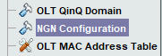
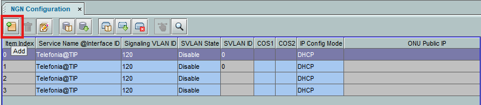
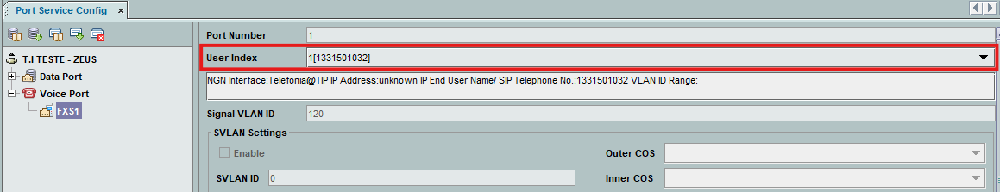
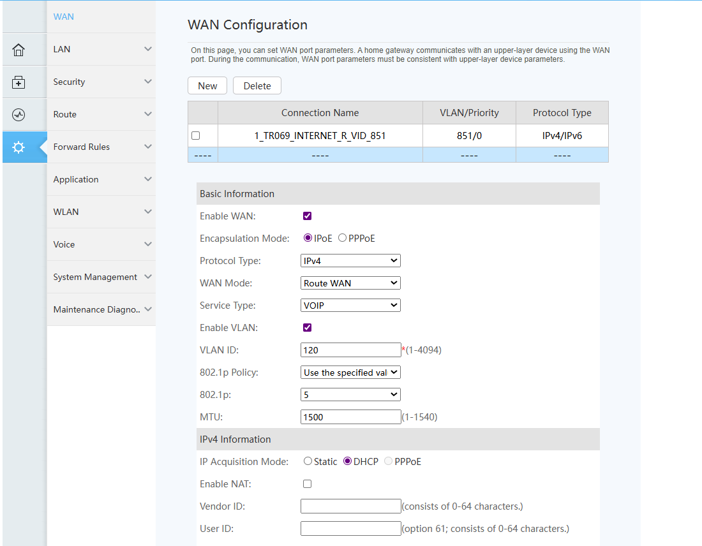
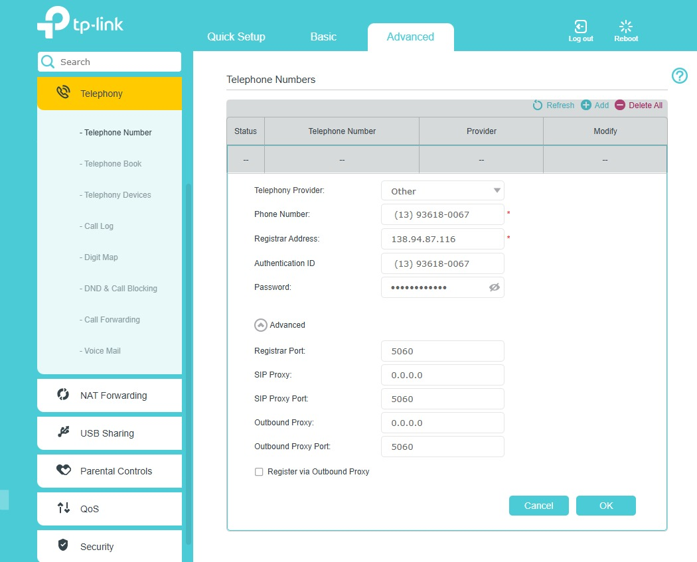
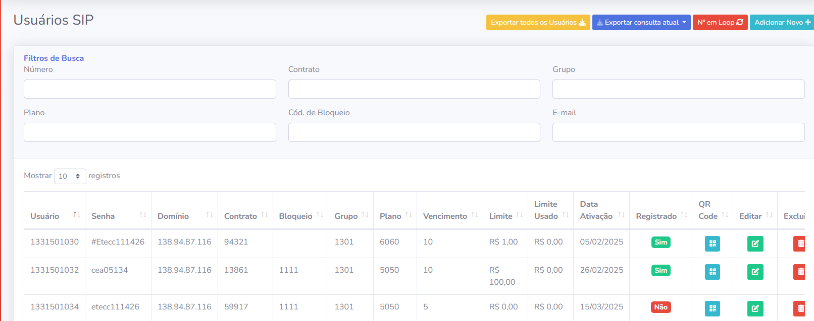
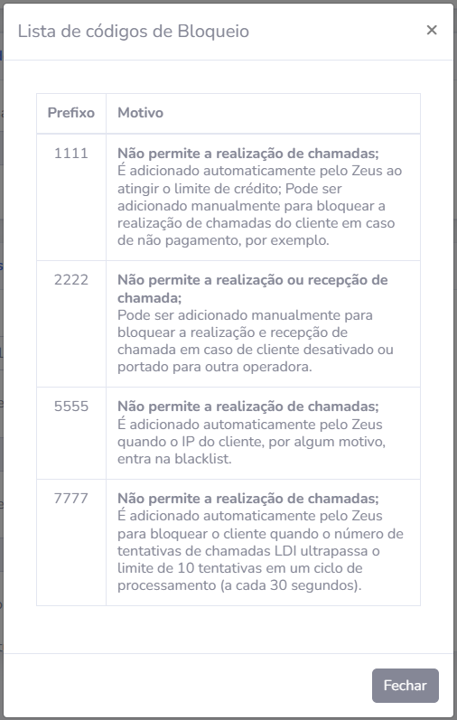

Configuração Geral de Telefonia (VoIP)
Guia de provisionamento via MK Integradores, configuração de OLT/ONT e monitoramento no Zeus Administrator.
1. Configuração no MK Integradores
- Acesse Integradores > Menu Lateral Telefonia > Submenu Assinantes.
- Selecione Adicionar Serviço ou Editar Serviço.
- Grupos de Atendimento: 1301 (PF) ou 1302 (PJ).
- Limite: Inserir valor
1 (valor simbólico).
- Domínio:
138.94.87.116
Importante: Remover a opção "Bq LDN" (Bloqueio de chamadas interurbanas) no MK Integradores.
Padrão da Linha
Prefixo: 3150-xxxx
Senha Padrão
#Etecc111426
2. Configuração na OLT (Provisionamento)
1. Selecionar OLT de destino e acessar NGN Configuration:

2. Clique em Add e preencha os parâmetros abaixo:

| Campo |
Valor |
| Service Name |
Telefonia@TIP |
| Signaling VLAN |
120 |
| SVLAN State |
Disable |
| IP Config Mode |
DHCP |
| DHCP Option60 |
Enable |
|
|
| User Index |
Inserir de acordo com ordem |
| Endpoint / SIP User |
Telefone do Cliente |
| SIP User Password |
#Etecc111426 |
| Confirm Password |
#Etecc111426 |
Configurando Port Service
Caminho: Port Service Config > Voice Port > FSX1 > Selecionar User Index.

3. Configuração nos Equipamentos (ONU/ONT)
Huawei
Criar o Perfil de VoIP dentro da ONT seguindo o modelo padrão.

TP-Link
Advanced > Telephony > Telephone Number > Inserir dados SIP.

4. Monitoramento no Zeus
Acesse: Operação > Usuários SIP.

- Usuário: Número do telefone.
- Senha: Senha de acesso SIP.
- Domínio: 138.94.87.116
- Grupo: 1301 - Pessoa física. / 1302 - Pessoa jurídica.
- Limite/Limite Usado: Valores fícticios, não trabalhamos com limite.
- Registrado (Sim): Configurado e Online.
- Registrado (Não): Pendente/Offline.
Legenda de Status e Bloqueios
- Liberado: Sem código de bloqueio.
- Bloqueio 1111: Parcial (Financeiro).
- Bloqueio 2222: Total (Suspenso).
